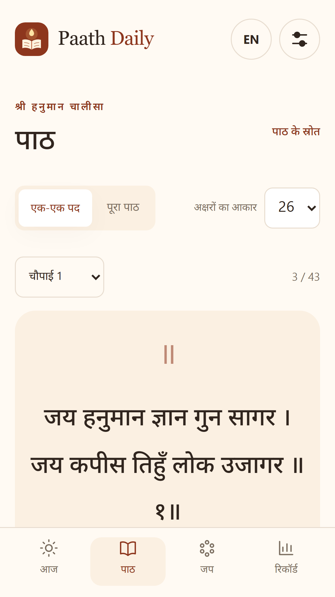
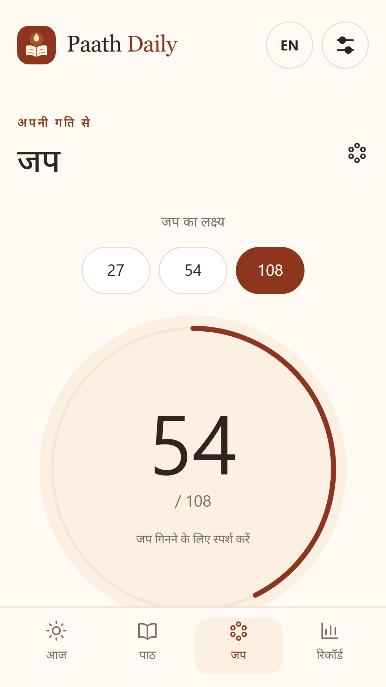

थोड़ा ठहरें।
मन से पढ़ें।
Paath Daily में हनुमान चालीसा पढ़ें, अपना जप गिनें और दैनिक साधना का निजी रिकॉर्ड रखें।
स्पष्ट ऑफ़लाइन पाठ · पढ़ने की जगह सुरक्षित · 27/54/108 या अपना लक्ष्य · दैनिक याद दिलाना · रात्रि रंग
Google Play · भारत / India
Android 1.0.1 is released in India. The 1.0.2 offline-audio update is being submitted for review. Chosen-day notifications and background playback require the Android version that supports them.


आपका रिकॉर्ड, आपके डिवाइस पर।
कोई खाता या क्लाउड रिकॉर्ड नहीं। पाठ और गिनती ऑफ़लाइन उपलब्ध हैं। वेब संस्करण 1.0.3 में CC BY 3.0 के अंतर्गत श्रेय सहित पी. बी. श्रीनिवास की संगीतमय हनुमान चालीसा रिकॉर्डिंग उपलब्ध है। अपनी ऑडियो फ़ाइल भी जोड़ सकते हैं। वेब पर सुनते समय पेज खुला रखें।
Web version 1.0.3 includes an attributed CC BY 3.0 Hanuman Chalisa recording by P. B. Sreenivas, with repeat and resume. Text, counts, history and the recording work offline after the web app is cached. You can also import your own local audio. Keep the web app page open while listening. Android 1.0.2 with background audio is being submitted for Play review; it is not yet publicly released. Reading and japa screens do not show ads.
समझें और अभ्यास करें
वेब 1.0.3 में एक-एक पद के साथ हिन्दी या अंग्रेज़ी भावार्थ देखें। पाठ और अर्थ छिपाकर खुद याद करें, कठिन पद चुनें और अपनी टिप्पणी लिखें। यह रिकॉर्ड इसी डिवाइस पर रहता है।
Web 1.0.3 adds attributed Hindi/English meanings, hide-to-recall, private review marks and verse notes. The full musical recording and the selected verse remain independent; this is not automatic subtitle synchronization. These learning features are not yet in the released Android version.